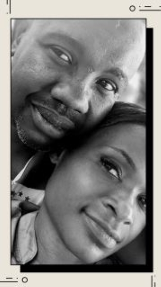
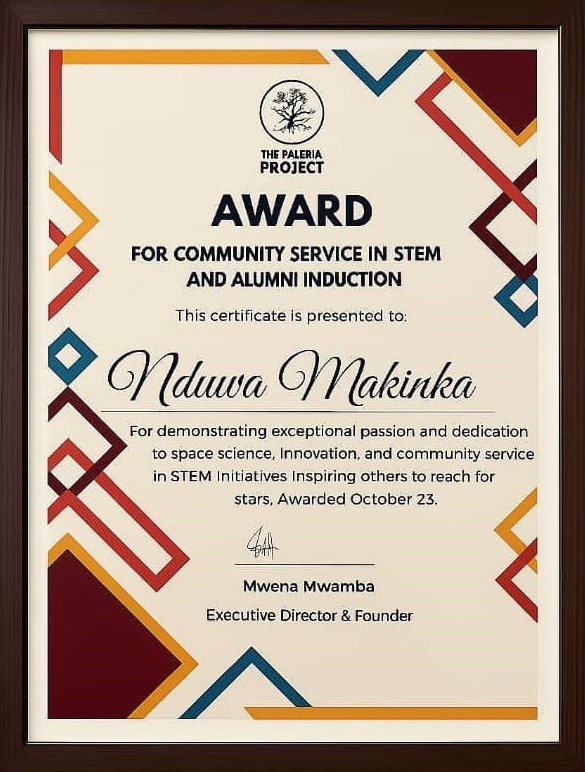
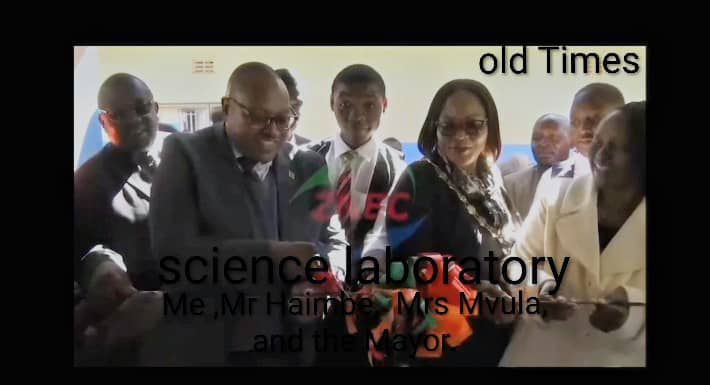
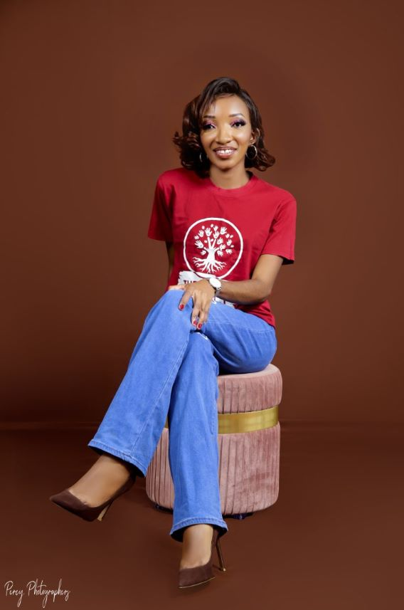
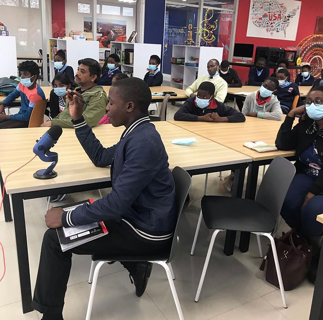
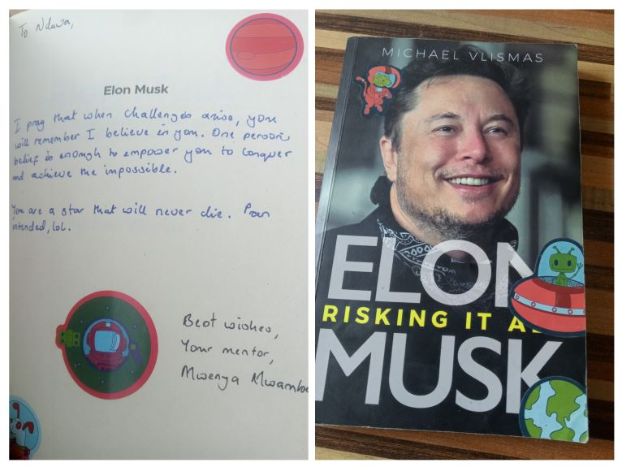
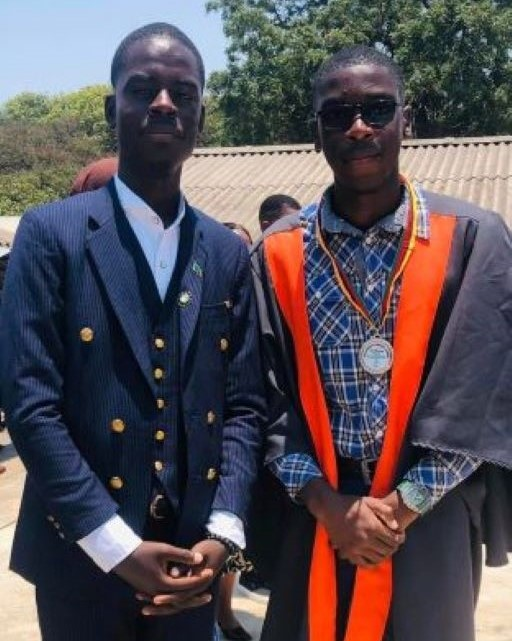
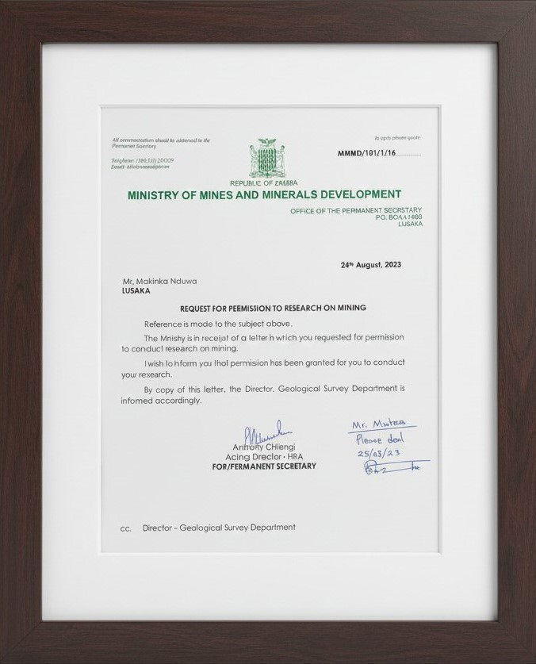
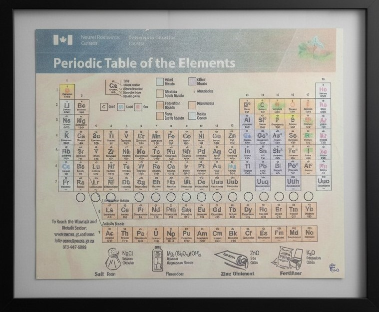
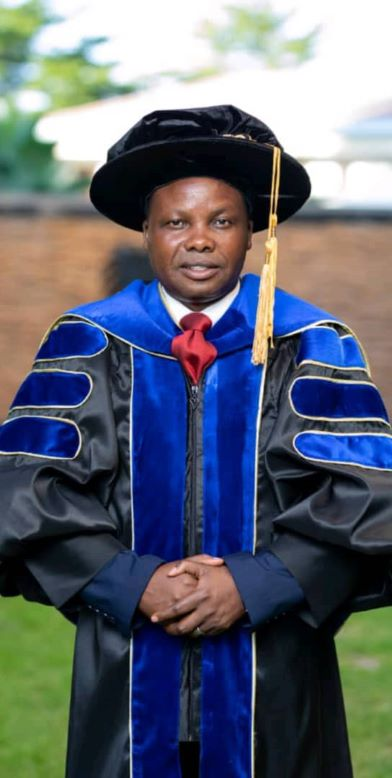

NDUWA MAKINKA
Embracing all that makes me unique
Hello I am Nduwa Makinka from Zambia, and welcome to my personal blog. I am passionate about Aviation, renewable energy, and climate change. I want to take you on a journey with me as I explore these topics and share my experiences, ideas, and insights on them and more. I hope to inspire and inform you on these topics that interest me. So join me as we explore my passions and multifaceted self. Let's take this journey together!
Unfolding Dreams,
!! COOL!!
(An Autobiography OF NDUWA MAKINKA) As I reflect on my life's journey. I am reminded of the power of resilience,
determination, and the unwaverin
g support of my loved ones. Growing up, I faced challenges that tested my resolve, but with the
guidance of mentors, the love of my family, and my own passion for learning,
I discovered my strengths and pursued my dreams.
A PICTURE TAKEN BY MY MENTOR MADAM MWENYA, IN MY TENTH GRADE.
The Unwavering Support of My Family, At the foundation of my success are my parents. Whose tireless efforts and unwavering support have been the driving force behind my achievements. My mother's fervent prayers and my father's sacrifices have instilled in me the values of hard work, perseverance, and humility. Despite the challenges they faced, they ensured that I had access to quality education, and their love has been a constant source of comfort and motivation. I am forever grateful for their role in shaping me into the person I am today.

MY LOVELY MOTHER AND FATHER.
A Passion for Learning, My academic journey has been a defining aspect of my life. I developed a strong foundation in science, technology, engineering, and mathematics (STEM), which sparked my interest in aviation, renewable energy, and climate change. As a student, I was driven to excel, and my hard work earned me the nomination as the Most Disciplined Student of the School. This recognition not only reflected my academic discipline but also my commitment to personal growth.

PRESENTED AT MY HIGH SCHOOL GRADUATION.
KIM MWANDAWA MWENYA MY CLOSE FRIEND ASKING ASTRONAUT MICHAEL BARRAT A QUESTION.
The Impact of Mentors, One of the most significant turning points in my life was when I met Madam Sikazwe. My science teacher and mentor. She saw potential in me and entrusted me with responsibilities that helped me grow both academically and personally. Her guidance and support enabled me to develop a deeper understanding of complex scientific concepts and build meaningful relationships with my peers. Madam Sikazwe's impact on my life extends beyond the classroom; she taught me the value of humility, hard work, and the importance of giving back to my community.


MWENYA MWAMBA.
The Impact of Mentors, One of the most significant turning points in my life was, I asking Astronaut DR. Michael Barrata a question during the astronaut appearance opportunity organized by Mwenya Mwamba.

AS I ASK WHAT IT TAKE TO BE ABLE TO CONTRIBUTE TO AFRICAS AEROSPACE.

MY GRADUATION GIFT..
My passion for aerospace science was transformed at this particular event. A journey to a scientific mandate of passion was born, AS I document my progression- from the pivotal discourse with Astronaut DR. Michael Barratt to the daily application of aerospace principles. I am consistantly reminded that the boundariesof human achievements are expanded by those who refuse to accept the status quo. Symbolized by the profound dedication, inscribed in my graduation gift. It has been an encouragement I have embraced not just as memory but as mandate to conquer the impossible.
Deputy Head Boy of School
Demonstrated exceptional leadership skills, serving as a role model and mentor to peers while supporting the school administration.Leadership Lessons and Legacy,I'm particularly grateful to my friend, Taylor Kachingwe, the Head Boy, who embodied humility and exceptional leadership. His ability to listen and empathize inspired me to adopt similar qualities. Together, we made a tangible impact on our school, notably by revitalizing the library, which had fallen into disrepair. With the support of my friends and patrons, we transformed it into a vibrant hub that catered to all students.

TWO VERY GOOD FRIENDS OF MINE TAYLOR KACHINGWE AND ALBERT SITWALA MWINGA, WHO TODAY IS CHIEF VISIONARY OFFICER OF EMPOWER THREE SIXTY.
Being appointed Deputy Head Boy of my school in 12th grade was a huge honor. I was privileged to work under the guidance of Dr. Pastor Mighty Zunga, Mr. Chabula, and Mrs. Musonda, who mentored the prefecture board. This role taught me invaluable lessons in leadership, teamwork, and advocacy. I learned to amplify the voices of the vulnerable and voiceless, many of whom came from humble backgrounds and relied on school as their sole opportunity for growth.The experience and guidance I received have instilled in me a lasting sense of leadership and responsibility, for which I'll forever be grateful to Dr. Pastor Mighty Zunga, Mr. ChaBula, and Mrs. Musonda.
I, MRS MVULA MY HEAD TEACHER, THE MAYOR OF LUSAKA CHILANDO CHITANGALA AND HONOURABLE MULAMBO HAIMBE UNVEILING SCIENCE LABORATORY.
The experience and guidance I received have instilled in me a lasting sense of leadership and responsibility, for which I'll forever be grateful to Dr. Pastor Mighty Zunga, Mr. ChaBula, and Mrs. Musonda.
Collaborated with industry experts, gaining insights into the aviation sector and developing a deeperA Turning Point in Aviation My experience at Kenneth Kaunda International Airport was a dream come true. I was thrilled to participate in research on aeronautic engineering, working alongside Mr. Grandson, the senior crew chief, who has become a mentor and inspiration to me. Our in-depth discussions on aircraft science, maintenance, and safety opened my eyes to the intricacies of aviation, and I'm grateful for the opportunity to have learned from him. I was also privileged to learn from Mr. Bryan Mutinta, the technical superintendent, and interact with professionals from various fields, including marshals, crew chiefs, and safety department personnel. Speaking with pilots from Malawi Airways, Ethiopian Airways, and Turkish Airways was a highlight, offering valuable insights into the industry. Stepping into a massive airliner was a surreal experience, and I'm thankful for the chance to have had these interactions. This experience was a game-changer for me, solidifying my passion for aviation and influencing my career aspirations. I'm excited to see where this journey takes me, and I'm grateful to Mr. Granson and all the professionals who shared their expertise and inspiration.

Contributed to cutting-edge research initiatives, gaining valuable experience in data collection, analysis, and interpretation.A Life-Changing Experience at the Ministry of Minds My experience at the Ministry of Minds during my 11th grade was truly surreal. I was privileged to have in-depth conversations with Mr. Kasumba, the chief geologist, who has become a mentor and inspiration to me. His encouragement to work hard and chase my dreams has had a lasting impact on me. Working alongside scientists at the Meteorological Department and the chemistry division was a dream come true, and I was thrilled to see the practical application of the chemistry I learned in class. I was amazed by the work being done at the Ministry, particularly in testing for minerals, and I was motivated to learn more about the processes involved. Seeing the wealth of mineral resources in Zambia was eye-opening, and I realized the immense potential for development in our country. It's clear that we, as a generation, have a crucial role to play in harnessing these resources and driving progress. I'm impressed by the Ministry's efforts to address climate change and promote renewable energy, and I'm proud to see the significant impact they're having on the country's finances. The Ministry's work is a testament to Zambia's potential, and I'm excited to be a part of the next generation of leaders who will shape the country's future.

A GIFT FROM MR KASUMBA MY MENTOR, CHIEF GIOLOGIST AT MINISTRY OF MINES.
Faith and Values, The role of faith and values in my life has been a profound and transformative experience, providing me with a sense of purpose, direction, and strength. My relationship with God has been a cornerstone of my journey, and the values instilled by my mentors, particularly Dr. Pastor Mighty Zunga, have had a lasting impact on my life. Through faith, I've experienced spiritual growth, gained a moral compass, developed purpose and direction, and cultivated resilience and perseverance. My faith and values have shaped my world view, informed my decisions, and given me a sense of purpose, and I am grateful for the impact they have had on my life, looking forward to continuing to grow and develop in these areas.

DR. PASTOR MIGHTY ZUNGA
Leadership and Personal Growth, Throughout my high school years. I had the opportunity to take on leadership roles, including serving as the President of the Science Club, Jets, and Deputy Head Boy of the School. These experiences taught me the value of teamwork, communication, and problem-solving. I also had the chance to work on innovative projects, such as the Tesla Auxiliary Coil Science Project, which showcased my passion for science and technology.
The Power of Community, My journey has been enriched by the people I have met along the way. Dr. Pastor Mighty Zunga, Introduced me to the love of the gospel and the importance of faith.Madam Sikazwe, who help me build my foundation in my love for science. Madam Mwenya, who organized an astronaut appearance conference, inspired me to pursue my dreams in space exploration. Kim Mwandaba Mwanya and Emmanuel Sikazwe, my friends and peers, supported me through thick and thin, and I am grateful for their friendship.
A Bright Future Ahead,As I look to the future, I am excited to continue pursuing my passions and making a positive impact in the impact in the world. I believe that education is key to unlocking human potential, and I am committed to contributing to the betterment of our education system in Zambia. My experiences have taught me that it takes a village to raise a great leader, and I am grateful for the people who have supported me on this journey.
THE LORDS PRIDE AND JOY
Discover the inspiring journey of a passionate leader, innovator, and academic achiev er. From serving as Deputy Head Boy and transforming school libraries to conducting gr oundbreaking research at Kenneth Kaunda International Airport and the Ministry of Minds, this is a story of curiosity, resilience, and impact. Explore how these experiences have shaped a vision for Zambia's future, fueled by technology, service, and the power of possibility
Let's Connect
© 2026 Your Brand | Design by MAKINKA NDUWA WEB DOVELOPERS